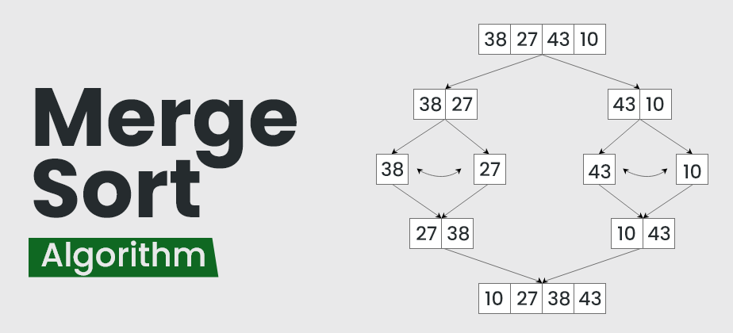

Difference Between =, == and === in JavaScript ?
Equal (=) in JavaScript is used for assigning values to a variable.
It is called as assignment operator.
It does not return true or false.
Double equals (==) in JavaScript is used for comparing two variables,
but it ignores the datatype of variable.
It is called as comparison operator.
Return true if the two operands are equal.
It will return false if the two operands are not equal.
Triple equals (===) is used for comparing two variables,
but this operator also checks datatype and compares two values.
It is also called as comparison operator.
It returns true only if both values and data types are the same for the two variables.
Important
Rules for (===) : it does not convert types.
Rules for (==) :
If one of the arguments is an object, and the other one is a primitive,
then the object gets converted to primitive.
for example,if we compare arrays with ==, they are never the same,
unless we compare two variables that reference exactly the same array.
alert( [] == [] ); // false
alert( [0] == [0] ); // false
and Comparison with primitives may give seemingly strange results as well:
alert( 0 == [] ); // true
alert('0' == [] ); // false
Here, in both cases, we compare a primitive with an array object.
So the array [] gets converted to primitive for the purpose of comparison
and becomes an empty string ''.
// after [] was converted to ''
alert( 0 == '' ); // true, as '' becomes converted to number 0
alert('0' == '' ); // false, no type conversion, different strings
Objects vs. Arrays ?
Objects allow us to create a single entity that stores data items by key.
Objects are used for storing keyed collections.
Arrays allow us to gather data items into an ordered list.
Arrays are used for storing ordered collections.
Map is a collection of keyed data items, just like an Object.
But the main difference is that Map allows keys of any type.
unlike Objects, keys are not converted to strings.
Any type of key is possible.
Using Objects as keys is one of the most notable and important
Map features.
Statically vs. dynamically typed languages ?
Statically-typed programming languages (C,C++,...) do type checking
(i.e., the process of verifying and enforcing the constraints of types on values)
at compile-time, whereas dynamically-typed languages do
type checks at runtime.
Weakly-typed languages (JavaScript,...) make conversions between unrelated
types implicitly; whereas,strongly-typed languages (Python,...)
do not allow implicit conversions between unrelated types.
What does JavaScript do at web browser ?
Before of JavaScript, the web was purely static. JavaScript enables web pages to have complex content that may react, and change dynamically without refresh all the page.
Statement vs Expression ?
An expression is any word or group of words or symbols that is
a value.In programming, an expression is a
value, or anything that executes and ends up being a value.
A statement is a group of expressions and/or statements that you design
to carry out a task or an action.
statement are two-sided. they either do tasks or don't do them.
Any statement that can return a value is automatically qualified to be used as an expression.
That is why a function or class is a statement and also an expression in JavaScript.
Expressions can be assigned or used as operands, while statements can only be declared.
Statements create side effects to be useful, while expressions are values or execute to values
example of statement:
function add(){
do something;
return something;
}
and we call it as a statement====> add();
example of expression====> let out = add();
JavaScript Variables Identifiers ?
The general rules for constructing names for variables (unique identifiers) are:
Names can contain letters, digits, underscores, and dollar signs.
Names must begin with a letter.
Names can also begin with $ and _ (it is not very common).
Names are case sensitive (y and Y are different variables).
Reserved words (like JavaScript keywords) cannot be used as names.
professional programmers often use JavaScript Dollar Sign ($)
as an alias for the main function in a JavaScript library and
use JavaScript Underscore (_) as an alias for "private (hidden)" variables.
What are the types of functions in JavaScript and why and when do we use functions ?
1. Named Functions: These are functions that are declared with a specific name
and can be executed by calling their name.
2. Anonymous Functions: These functions do not have a specific name and are
usually assigned to a variable or passed as arguments to other functions.
3. Arrow Functions: Introduced in ES6, arrow functions provide a concise
syntax for writing anonymous functions.
functions are commonly used in JavaScript for :
1. Code Reusability : define once and reuse it multiple times
2. Abstraction : Functions can abstract complex logic and provide a simplified interface
3. Modularity : Breaking down code into smaller to making it easier to maintain, test, and debug.
4. Encapsulation : preventing conflicts with other parts of the code
5. Event Handling : used to handle events triggered by user interactions
6. Callbacks and Asynchronous Operations
Interpreter Vs Compiler ?
Programming languages like JavaScript, Python, Ruby use interpreters.
Programming languages like C, C++, Java use compilers.
1-Execution Process : An interpreter reads the source code line
by line and executes it immediately. A compiler, on the other hand,
translates the entire source code into machine code or bytecode before execution.
2-Translation : Interpreters do not translate the entire source
code into machine code. They interpret and execute each line or instruction of
the source code individually. Compilers translate the entire source code into
machine code or bytecode before execution, enabling faster execution once
the translation is complete.
3-Efficiency : Interpreted programs tend to be slower
than compiled programs because they are executed directly,
without the performance optimizations that the compilation process provides.
Compiled programs, once translated, are generally faster and more efficient.
4-Error Detection : Interpreters detect errors on a
line-by-line basis. When an error is encountered, the execution of the
program may halt, preventing further execution. In contrast, compilers
detect errors during the compilation phase and provide a list of all
errors and warnings before the program is executed.
5-Portability : Interpreted programs are generally more
portable, as the interpreter can be run on different systems, provided the
interpreter is available. Compiled programs are system-dependent, as
the compiled output is specific to the target system.
6-Debugging : Interpreters typically offer more
interactive and immediate debugging capabilities, allowing developers
to step through the code and inspect variables during runtime.
Debugging compiled programs often involves using separate debugging
tools, which may be less immediate and require additional setup.
Iterates Array
One of the oldest ways to cycle array items is the for loop over indexes:
let fruits = ["Apple", "Orange", "Pear"];
for (let i = 0; i < fruits.length; i++) {
alert( fruits[i] );
}
But for arrays there is another form of loop, for..of:
// iterates over array elements
for (let fruit of fruits) {
alert( fruit );
}
Technically, because arrays are objects, it is also possible to use for..in:
for (let key in fruits) {
alert( fruits[key] ); // Apple, Orange, Pear
}
But that is actually a bad idea. There are potential problems with it:
1.The loop for..in iterates over all properties, not only the numeric ones.
2.The for..in loop is optimized for generic objects, not arrays, and thus is
10-100 times slower. Of course, it is still very fast. The speedup may only
matter in bottlenecks. But still we should be aware of the difference.
forEach
The forEach method allows to run a function for every element of the array.
fruits.forEach(function(item, index, array) {
// ... do something with item
});
What is this?
In JavaScript, the this keyword refers to an object.
Which object depends on how this is being invoked (used or called).
The this keyword refers to different objects depending on how it is used:
In an object method, this refers to the object.
Alone, this refers to the global object.
In a function, this refers to the global object.
In a function, in strict mode, this is undefined.
In an event, this refers to the element that received the event.
Methods like call(), apply(), and bind() can refer this to any object.
Note:
this is not a variable. It is a keyword. You cannot change the value of this.
Merge Sort Algorithm ?
Merge sort is defined as a sorting algorithm that works by dividing an array
into smaller subarrays, sorting each subarray, and then merging the sorted subarrays
back together to form the final sorted array.
Merge sort is a recursive algorithm that continuously splits the array in half until it
cannot be further divided i.e., the array has only one element left (an array with one element
is always sorted). Then the sorted subarrays are merged into one sorted array.

Time Complexity: O(N log(N))
Applications of Merge Sort: Sorting large datasets where is too large to fit into memory.
Advantages: Guaranteed worst-case performance
Disadvantage: Not always optimal for small datasets